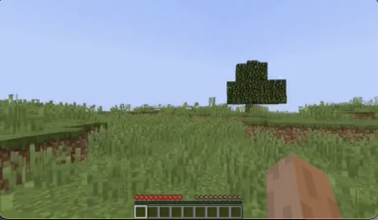
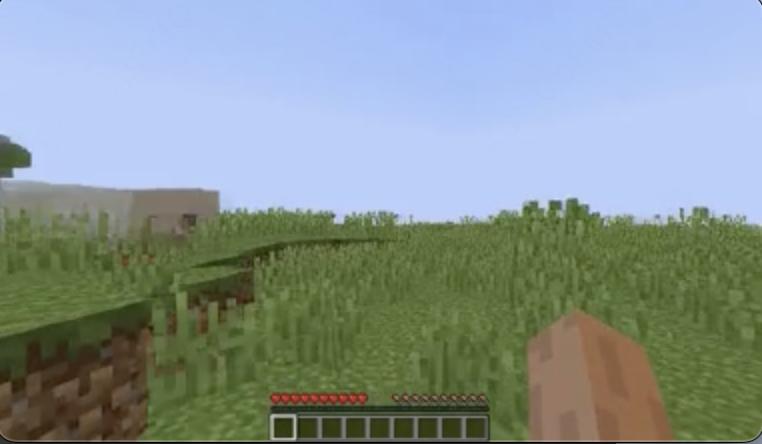
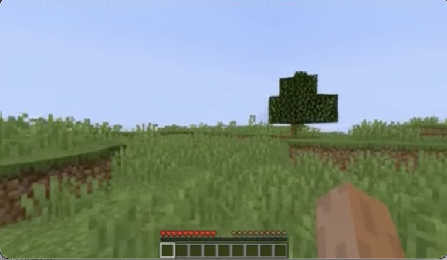
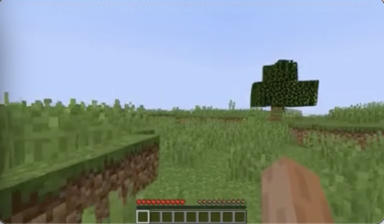
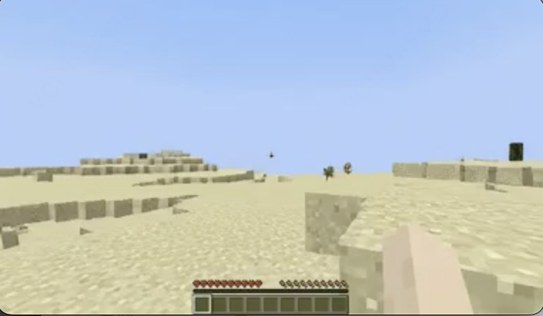
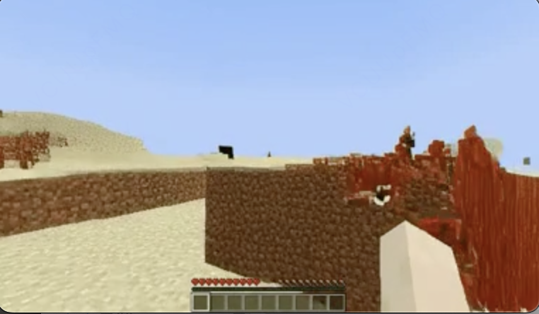
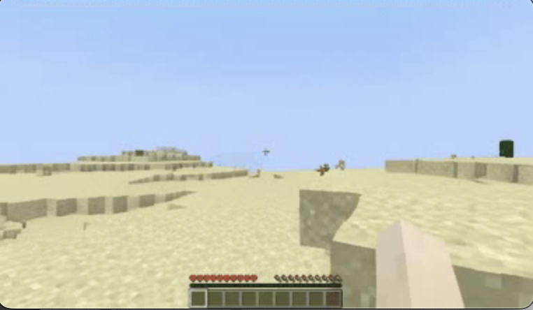
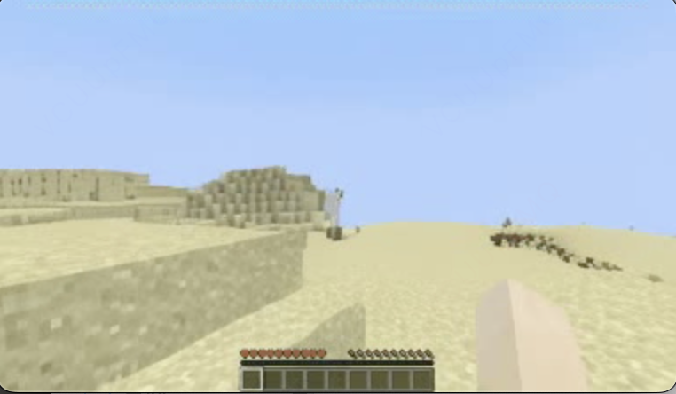
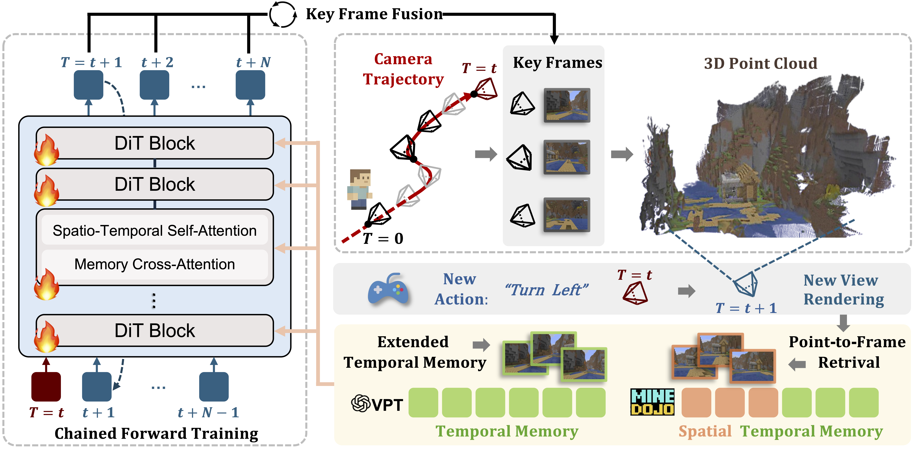

TL;DR MosaicMem is a hybrid spatial memory for video world models that bridges explicit 3D memory and implicit latent frames. It retrieves spatially aligned 3D patches to preserve persistent scene structure, improving camera consistency while supporting dynamic scene modeling, long-horizon navigation, and memory-based editing.
Video diffusion models are moving beyond short, plausible clips toward world simulators that must remain consistent under camera motion, revisits, and intervention. Yet spatial memory is still a key bottleneck: explicit 3D structures can improve reprojection-based consistency but struggle with depicting moving objects, while implicit memory often produces inaccurate camera motion even with correct poses. We propose Mosaic Memory (MosaicMem), a hybrid spatial memory that lifts patches into 3D for reliable localization and targeted retrieval, while exploiting model’s native conditioning to preserve prompt-following generation. MosaicMem composes spatially aligned patches in the queried view via a patch-and-compose interface, preserving what should persist while letting the model inpaint what should evolve. With PRoPE camera conditioning and two new memory alignment methods, experiments show improved pose adherence versus implicit memory and stronger dynamic modeling than explicit baselines. MosaicMem further enables minute-level navigation, memory-based scene editing and autoregressive rollout.
MosaicMem lifts video patches into 3D space and gathers them in the target viewpoint, stitching them together like a mosaic. Our model simultaneously supports text-driven dynamics and free camera navigation. Navigation is jointly controlled by MosaicMem retrieval and PRoPE conditioning. The retrieved mosaic patches are flattened and concatenated with the token sequence as conditioning inputs, while residual alignment errors are corrected through warping.
Similar to Genie3, our system supports promptable world events. These events allow users to dynamically modify the generated world, thereby enriching the interactive experience beyond simple navigation control.
We can extract spatial memory from different scenes, perform stitching and spatial transformations such as translations, and synthesize scenes that would be impossible to exist in the real world.
The scenes on the left and right come from different spatial memories—some are virtual, some are real. The agent can freely explore within the synthesized imaginary environment.
The scenes on the top and bottom come from different spatial memories. This allows us to generate impossible, Inception-like environments that could not exist in reality.
Compared with explicit-memory baselines (represented here by GEN3C), MosaicMem can depict rich prompt-driven dynamics. In the examples below, the first half of each clip is generated by GEN3C, and the second half is continued by MosaicMem.
Compared with implicit-memory baselines (represented here by Context-as-Memory), MosaicMem can follow user-specified camera motion instructions almost perfectly.
(Video resolution has been compressed for optimized web loading)
Initial View

Revisit View

Initial View

Revisit View

(Video resolution has been compressed for optimized web loading)
Initial View

Forward Exploration

Initial View

Forward Exploration


Memory Forcing Pipeline. Our framework combines spatial and temporal memory for video generation. 3D geometry is maintained through streaming reconstruction of key frames along the camera trajectory. During generation, Point-to-Frame Retrieval maps spatial context to historical frames, which are integrated with temporal memory and injected together via memory cross-attention in the DiT backbone. Chained Forward Training creates larger pose variations, encouraging the model to effectively utilize spatial memory for maintaining long-term geometric consistency.
(Video resolution has been compressed for optimized web loading)
Demonstration of model performance on long-term memory tasks, comparing Ground Truth and model output results.
@article{mosaicmem2026,
title = {MosaicMem: Hybrid Spatial Memory for Controllable Video World Models},
author = {Wei Yu and Runjia Qian and Yumeng Li and Liquan Wang and Songheng Yin and Sri Siddarth Chakaravarthy P and Dennis Anthony and Yang Ye and Yidi Li and Weiwei Wan and Animesh Garg},
journal = {arXiv preprint arXiv:2603.17117},
year = {2026}
}